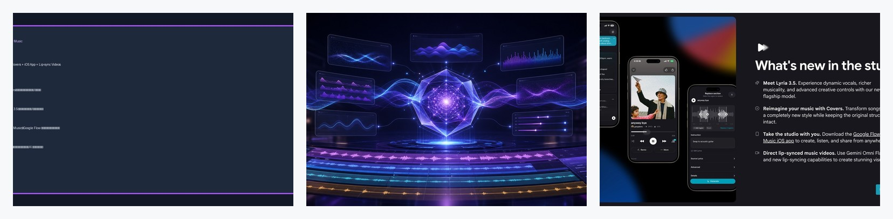

Threads｜Google Flow Music：Lyria 3.5、Covers 與 AI 對嘴音樂影片

為什麼保存
這則 Threads 值得歸檔，因為它把 AI 音樂生成從「從零生一首歌」推進到「拿既有歌曲做曲風轉換、再接影片生成」的工作流。對廣告、短影音、課程、活動紀錄與品牌影片來說，這不只是新模型，而是配樂流程的重排：先描述情緒與曲風，再產生多個版本，甚至接 lip-sync music video。
Threads 可見重點
來源是 LIQ AI（@liq_media）的 Threads 貼文。主文稱：
- Google 音樂模型 **Lyria 3.5** 上線 **Flow Music**。
- 新增 **Covers** 功能：把一首歌轉成完全不同曲風，但保留旋律架構。
- 這可能降低影片配樂時「海撈免版稅音樂庫」的時間成本。
- 圖片標示為 Google Flow Music 官方發布圖來源。
作者補充串又整理三個對接案影片值得注意的方向：
- **Covers**：把任何一首歌轉成指定曲風，不必重新作曲，讓既有旋律套上新味道。
- **Flow Music iOS App**：手機上也能生歌、聽歌。
- **Gemini Omni Flash / 對嘴音樂影片**：貼文稱可直接做 lip-sync music video，讓配樂到成片更連續。
查核來源
Google Labs 的 Flow 頁可存取，頁面定位為「AI Creative Studio for Video, Images & Custom Tools」。頁面 bundle 文字包含 **Flow Music** card：`Step into your new generative music studio`，並稱 Google Flow 是 AI creative products family。
另外，韓文科技媒體「開發日報 / 개발일보」保存了標題為 **Google, 음악 생성 모델 Lyria 3.5 출시…Flow Music에 적용** 的文章與 Google Flow Music 官方發布圖。該文轉述 Google 官方發布：
- Google 發布音樂生成模型 **Lyria 3.5**，並部署到 **Flow Music**。
- 新版本改善 musicality、lyrics/vocal quality 與生成控制。
- Flow Music 加入 **Covers**，可把歌曲改成不同 style，同時保留 original structure。
限制：本次查核時，Google MusicFX / 部分 Google Labs 頁面在目前網路環境出現地區或動態路由限制；因此本文把 Threads 作為發現來源，Google Labs Flow 頁與韓文科技媒體保存的官方圖 / 官方發布轉述作為輔助查核，不把所有社群說法視為已完整官方驗證。
實務判讀
| 功能 | 對創作者的意義 | 仍需確認 |
|---|---|---|
| Lyria 3.5 | 更好的音樂性、人聲與控制能力，適合生成短片配樂 demo。 | 實際可用地區、帳號權限、價格、輸出長度。 |
| Covers | 將既有旋律改編為新曲風，快速做 mood board 或版本比較。 | 原曲是否可合法上傳、改編、商用與發布。 |
| iOS App | 現場、手機、短影音工作流更快。 | 台灣帳號是否可下載/使用、功能是否完整。 |
| Lip-sync music video | 可能把音樂生成與 MV 生成接起來。 | 口型品質、肖像/聲音授權、平台標示規則。 |
對接案影片的流程影響
過去商業影片常見流程是：找參考音樂、確認版權、剪接對拍、修改情緒、再買授權。Flow Music 這類工具可能讓流程變成：
- 先描述影片情緒、節奏、場景與品牌調性。
- 產生幾個配樂方向。
- 用 Covers 或 style transfer 做曲風版本比較。
- 讓導演 / 客戶選 mood，再進一步生成或購買正式授權音樂。
- 若需要社群短片，再接 lip-sync / image-to-video / avatar video 生成畫面。
這對提案與分鏡階段很有用，但正式交付仍不能跳過音樂版權與素材授權。
風險與提醒
- **Covers 不等於免版權**：把一首歌轉成其他曲風仍可能涉及原曲著作權、錄音著作、改作權、公開傳輸與商用授權。
- **「免版稅音樂庫」仍有價值**：AI 生成配樂可用於 demo / moodboard，但商業發布仍需可證明的授權鏈。
- **上傳歌曲要小心**：不要把未授權商業音樂、客戶未公開素材或私人音檔上傳到雲端工具。
- **AI 標示**：若對外發布 AI 生成或 AI 改編音樂，建議標註 AI assisted / AI generated，並保留生成紀錄。
- **地區與帳號限制**：Google Labs / Flow Music 功能可能依地區、帳號、語言與 waitlist 狀態不同而異。
- **社群導流語要降溫**：「不用再海撈免版稅音樂庫」是使用情境 framing，不代表所有正式專案都可省略授權流程。
欒帥可用的測試題
如果之後能進 Flow Music，可用三組測試：
- 30 秒品牌形象片：溫暖、科技感、低鼓點、無人聲。
- 同一旋律做三種 Covers：lo-fi、cinematic orchestral、city pop。
- 生成一段短 lip-sync music video，看口型、節奏點、歌詞同步與畫面一致性。
評估標準不是「好不好聽」而已，而是：可控性、改稿速度、版權可交代性、客戶審稿成本與最終發布風險。